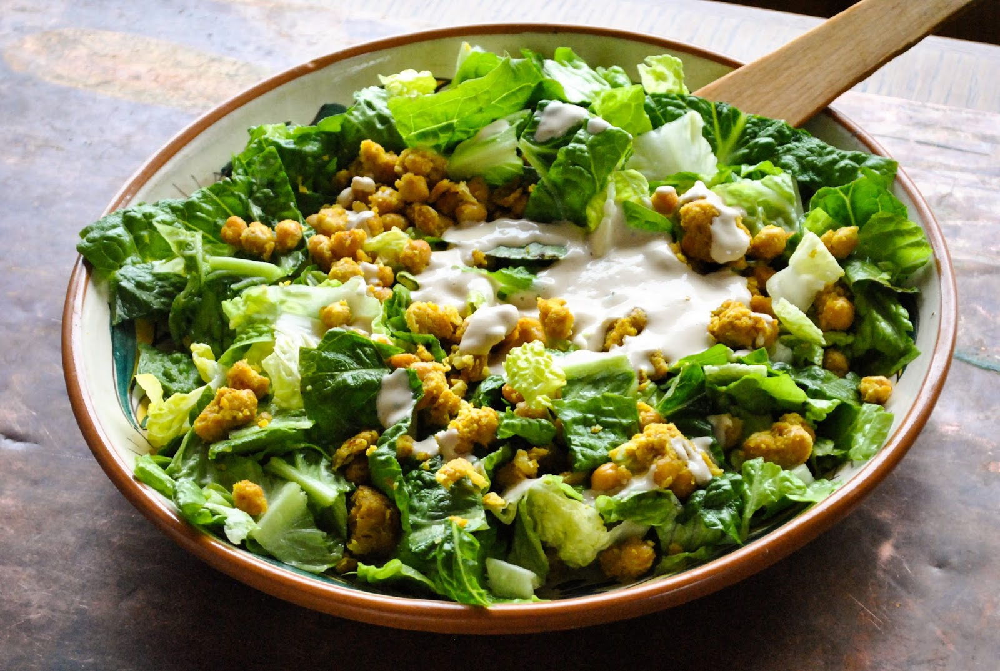

Salad

My favorite way to make salad
Two main ingredients in this bad boy: artichokes and heart of palm
Ingredients
- One head of lettuce
- Lots of hemp hearts
- 5 quartered artichoke hearts
- 1-2 cylinders of heart of palm
- Small handful of kalamata olives
- Spoonful of sauerkraut
- 1 can of kidney beans
- Olive oil, ACV, salt, and pepper to taste
Steps
- Chop up the lettuce smaller than you would normally see in a salad. This is so you can eat it with a spoon, like a civilized person.
- Cut up artichoke hearts and heart of palm into bite sized pieces
- Slice kalamata olives into fours
- Combine all of the ingredients together
Return to main page